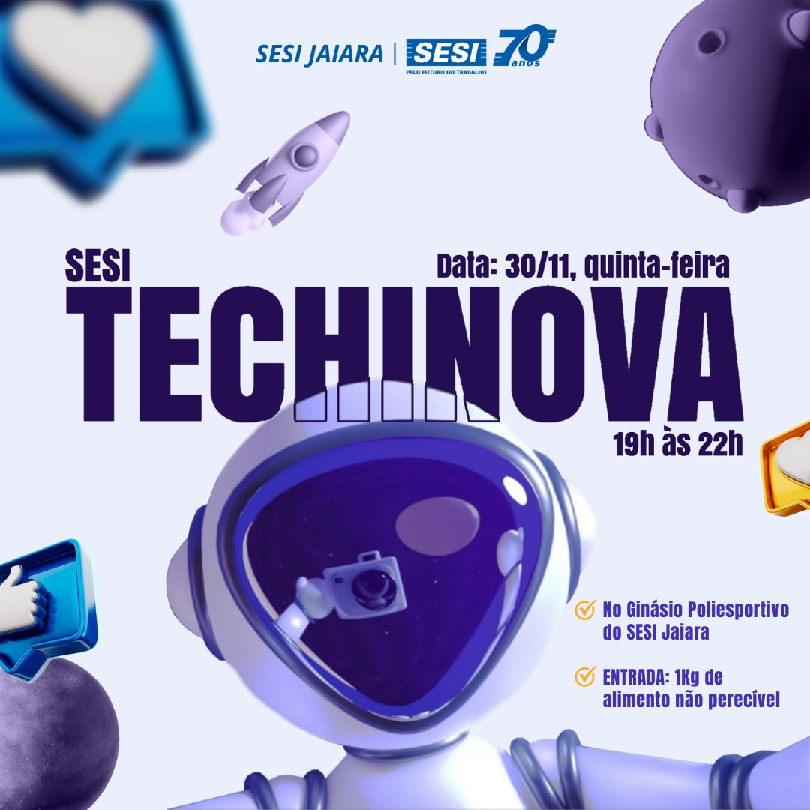

Tudo aquilo que você sempre quis saber sobre o mundo Tech, em um único lugar
Projetos de inovaçôes do SESI JAIARA
A Escola Sesi Jaiara, por meio desta feira de tecnologia, busca estimular a criatividade e aprimorar as habilidades dos alunos. O objetivo principal é proporcionar um diferencial significativo para a vida profissional dos estudantes, impulsionando melhorias nas atividades em grupo e promovendo o desenvolvimento pessoal, preparando-os para enfrentar desafios profissionais de forma mais assertiva.
Ensino Fundamental II e Ensino Médio
No início do ano de 2023, a gestão da Escola SESI Jaiara, pediu para os professores que criassem um projeto de sustentabilidade que envolvesse também tecnologia.

Esses e outros projetos,foram apresentados numa feira de ciências tecnológicas organizada pelos professores do Ensino Médio.
Ensino fundamental
Aqui estão listados todos os grupos do Ensino Fundamental que participaram da Feira Tecnológica.
Ensino Médio
A seguir, apresentamos a relação completa de todos os grupos do Ensino Médio que participaram da Feira Tecnológica.